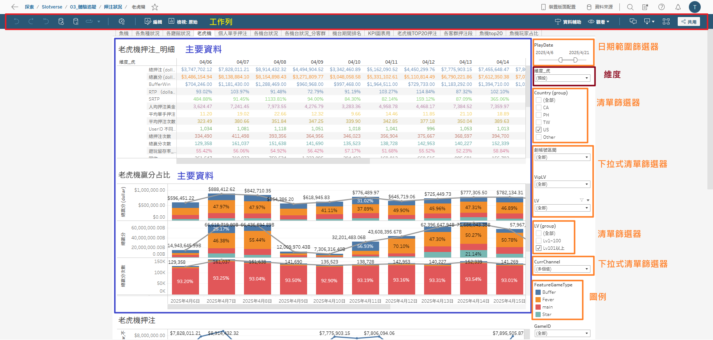

一、工作列使用
左上方工作列可回到上一步或是暫停資料更新

在調整篩選條件時，每調整一次就需要重新載入資料，因此需調整多個篩選條件時，建議先點選左上角暫停資料更新，調整完篩選條件再恢復更新

可從工作列右方下載原始數據，若該頁面有多張表，則選擇需要下載的表，建議存為CSV格式。
儀表板主要分三部分：工作列、篩選器、主要資料
左上方工作列可回到上一步或是暫停資料更新
在調整篩選條件時，每調整一次就需要重新載入資料，因此需調整多個篩選條件時，建議先點選左上角暫停資料更新，調整完篩選條件再恢復更新
可從工作列右方下載原始數據，若該頁面有多張表，則選擇需要下載的表，建議存為CSV格式。
分為兩種：
可選擇要包含或排除輸入的ID，若有多個ID要輸入時可從Excel直接複製整串名單貼上
輸入完ID按下加號即可
可自由選擇多個條件
若需一次選擇較多數量時，可先暫停資料更新，透過Shift選擇多個值

在看折線圖時若太多條線導致要看的顏色不好找時，可以點擊該顏色的圖示，顯示出想看的顏色
當在觀看資料時需要分類(例如分客群、平台等)，可透過選擇維度來進行分類，維度不像篩選器是排除或保留某些資料，而是將所有資料進行分類
當在觀看主要資料時，若想知道更詳細資料(例如看到禮包有11人購買，想知道購買者的UserID)，可以點開詳細資料查看